Équipement / Armes
Armes
41 armes ont déjà été recensées dans les bandes-annonces et captures officielles, réparties en 8 catégories. La personnalisation (attachements) est confirmée, et le port est limité à 2 fusils + 2 pistolets à la fois — le reste se range dans le coffre du véhicule. Depuis l'Extended Look du 27 août 2026, on sait aussi qu'il est possible de basculer instantanément entre deux armes déjà équipées, sans passer par la molette.
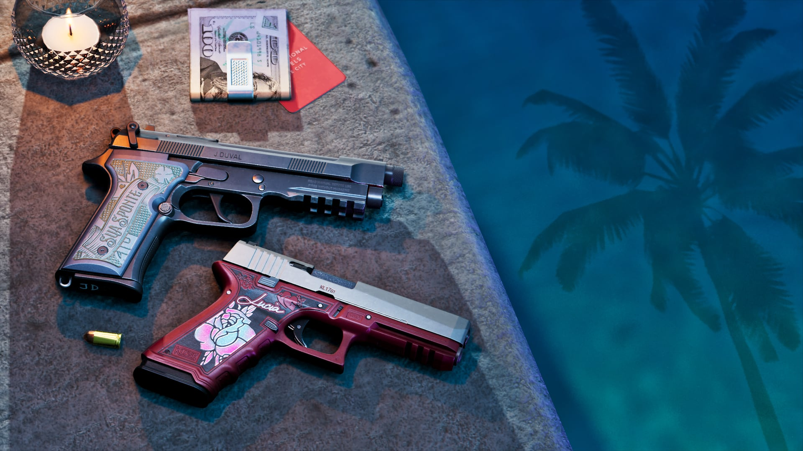
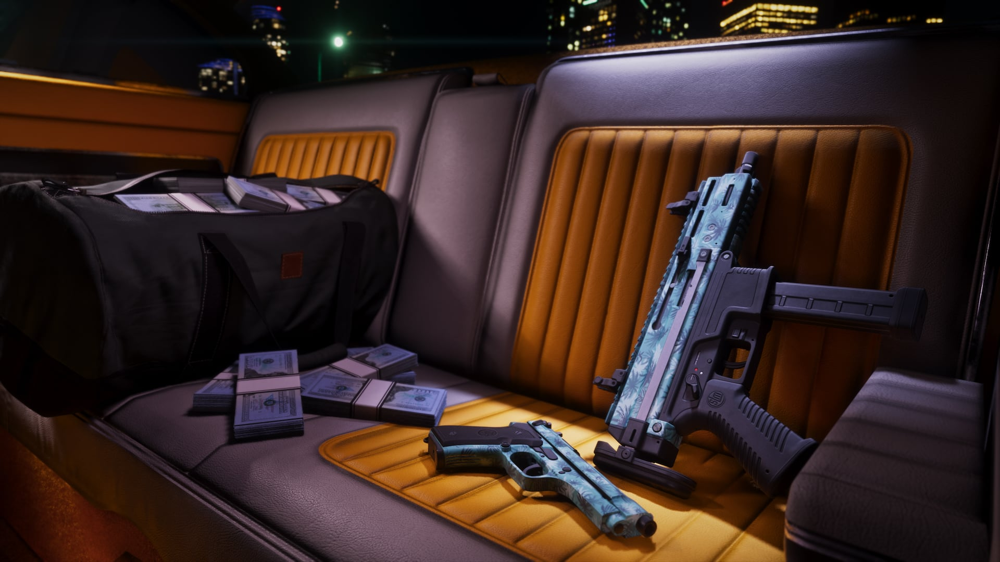
© Rockstar Games / Take-Two Interactive
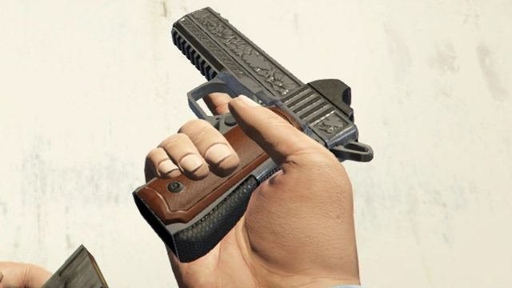
© Rockstar GamesHeavy Pistol
Arme de poing · Inspiré du Colt M1911
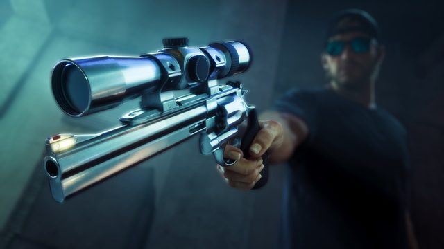
© Rockstar GamesMustang .357 Revolver
Arme de poing · Inspiré du Colt Python
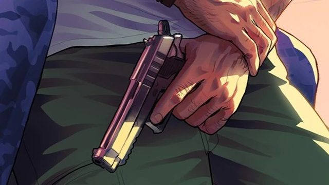
© Rockstar GamesPistolet standard
Arme de poing · Inspiré du Taurus PT92AF
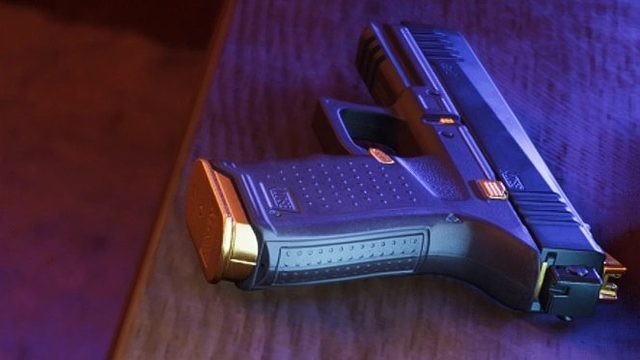
© Rockstar GamesPistolet à chargeur rapide
Arme de poing · Inspiré du Glock / SIG-Sauer P320
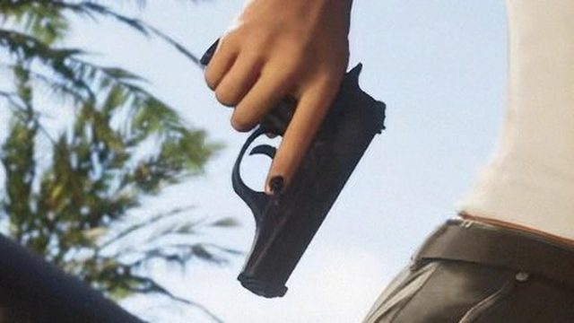
© Rockstar GamesPistolet compact .380
Arme de poing · Inspiré du Bersa Firestorm 380
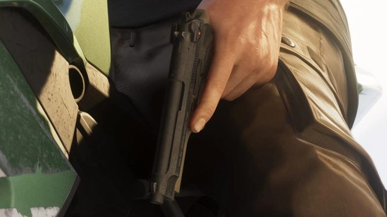
© Rockstar GamesBeretta 92FS
Arme de poing · Modèle Beretta 92FS
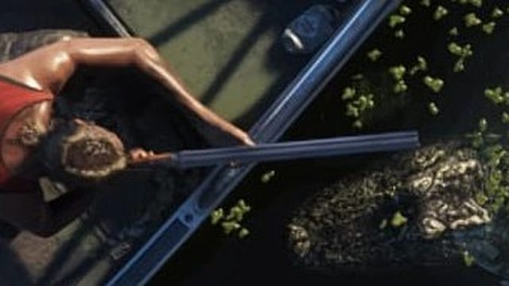
© Rockstar GamesFusil à canon double
Fusil à pompe · Configuration side-by-side (SxS)
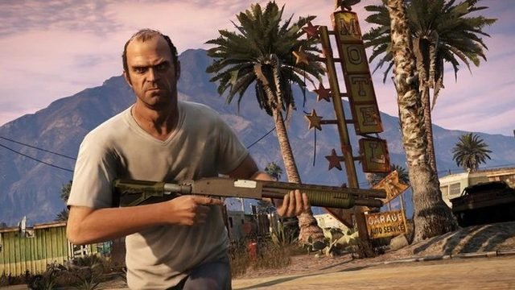
© Rockstar GamesFusil à pompe
Fusil à pompe · Inspiré du Mossberg 590
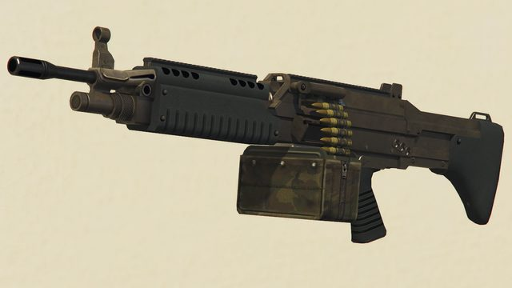
© Rockstar GamesMitrailleuse de combat
Mitraillette / SMG · Inspirée du M249 SAW
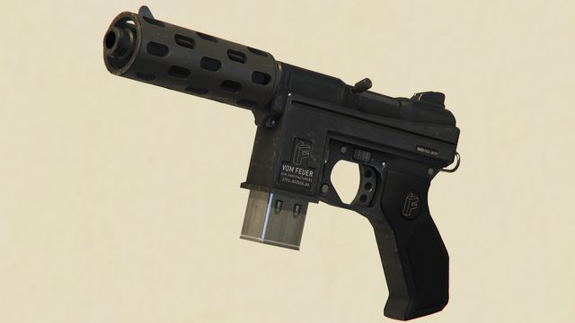
© Rockstar GamesSMG compacte
Mitraillette / SMG · Inspirée du Scorpion Mini-SMG
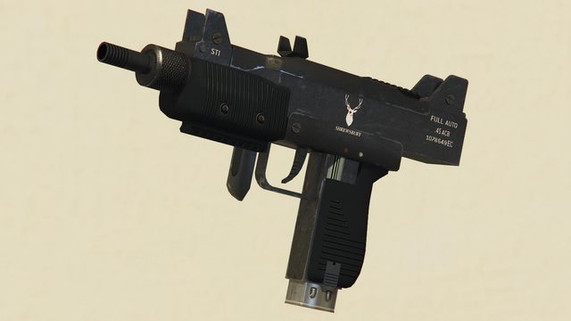
© Rockstar GamesMicro SMG
Mitraillette / SMG · Inspirée du Mini Uzi
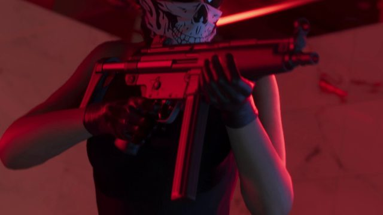
© Rockstar GamesSMG standard
Mitraillette / SMG · Inspirée du MP5
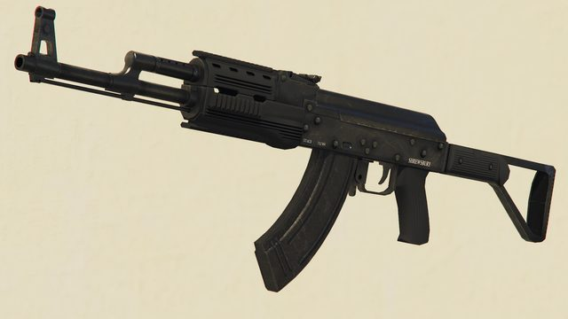
© Rockstar GamesFusil d'assaut
Fusil d'assaut · Inspiré de l'AK-47
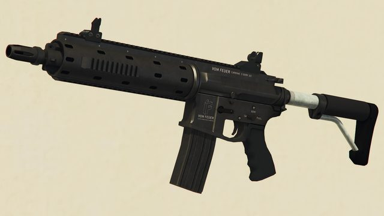
© Rockstar GamesCarabine
Fusil d'assaut · Inspirée de l'AR-15 / HK416
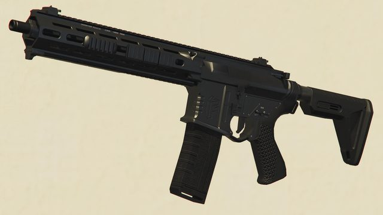
© Rockstar GamesCarabine Mk II
Fusil d'assaut · Variante modernisée avec accessoires
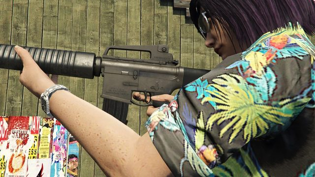
© Rockstar GamesCarabine de service
Fusil d'assaut · Inspirée du M16 A1/A2
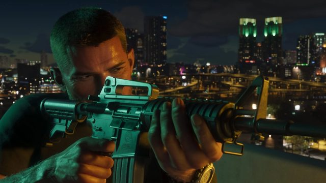
© Rockstar GamesDuke 556
Fusil d'assaut · Premier nom officiel in-game confirmé
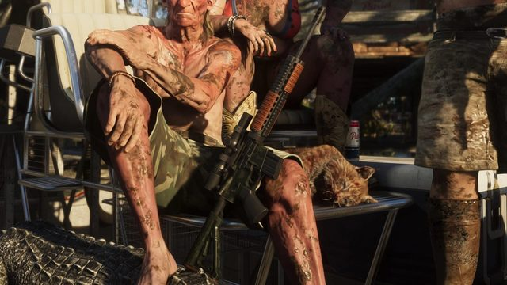
© Rockstar GamesFusil de précision d'assaut
Fusil de précision · Inspiré du L129A1
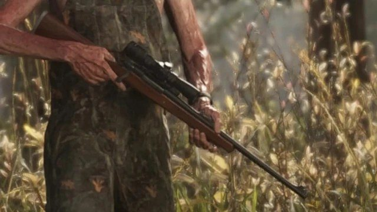
© Rockstar GamesFusil à verrou
Fusil de précision · Inspiré du Remington 700 BDL
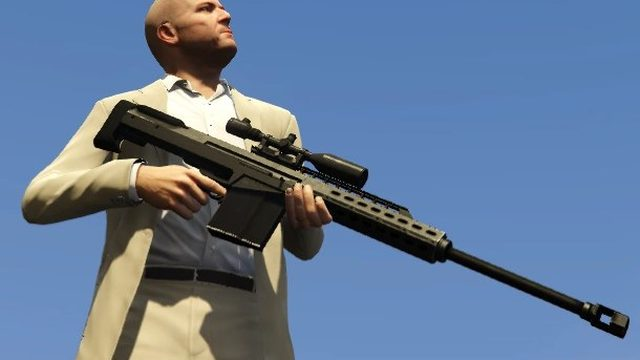
© Rockstar GamesFusil longue portée
Fusil de précision · Inspiré de l'Arctic Warfare L96A1
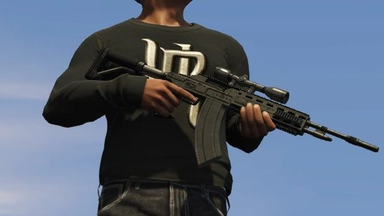
© Rockstar GamesFusil de précision semi-auto
Fusil de précision · Inspiré du Springfield M1A
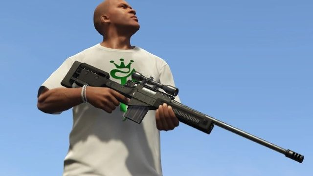
© Rockstar GamesCarabine .22
Fusil de précision · Inspirée du Ruger 10/22
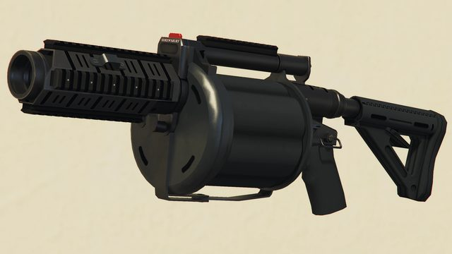
© Rockstar GamesLance-grenades
Arme lourde · Inspiré du Milkor MGL
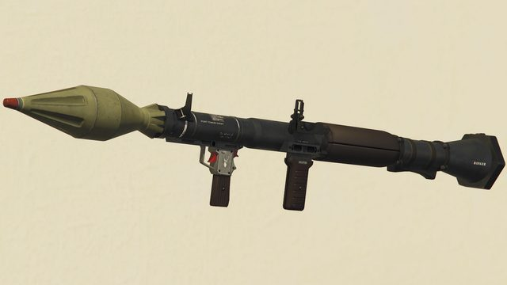
© Rockstar GamesLance-roquettes
Arme lourde · Inspiré du RPG-7
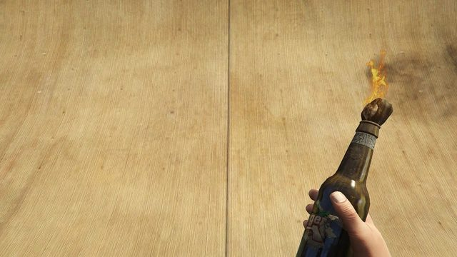
© Rockstar GamesBouteille incendiaire
Arme de jet / explosif · Explosif de jet
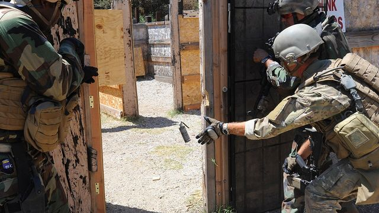
Photo Wikimedia CommonsGrenade aveuglante
Arme de jet / explosif · Flashbang
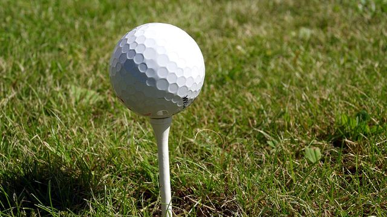
Photo Wikimedia CommonsBalle de golf
Arme de jet / explosif · Projectile improvisé
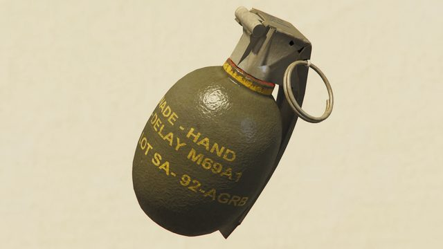
© Rockstar GamesGrenade
Arme de jet / explosif · Inspirée de la M61
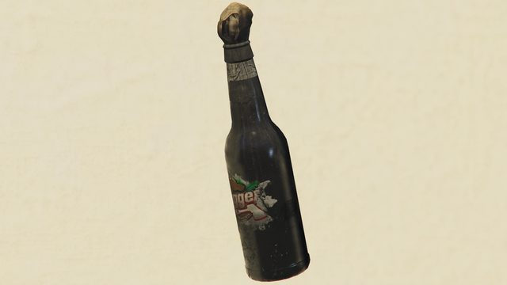
© Rockstar GamesCocktail Molotov
Arme de jet / explosif · Bouteille incendiaire artisanale
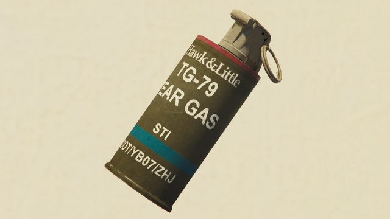
© Rockstar GamesGrenade fumigène
Arme de jet / explosif · Inspirée de la M18
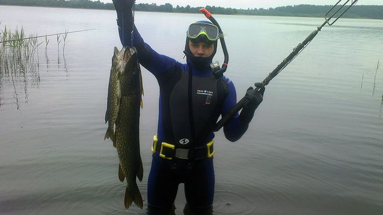
Photo Wikimedia CommonsFusil sous-marin
Arme de jet / explosif · Harpon pour le gameplay aquatique
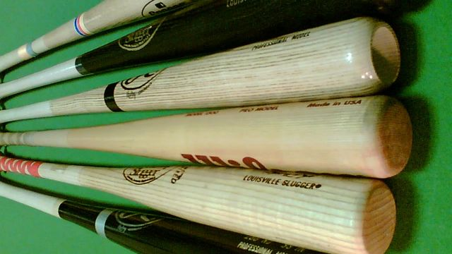
Photo Wikimedia CommonsBatte de baseball
Corps à corps · Arme de mêlée classique de la série
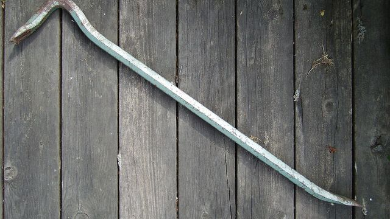
Photo Wikimedia CommonsPied-de-biche
Corps à corps · Outil polyvalent
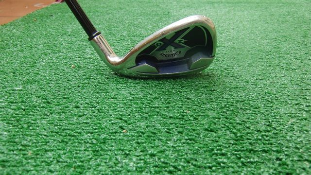
Photo Wikimedia CommonsClub de golf
Corps à corps · Arme de mêlée
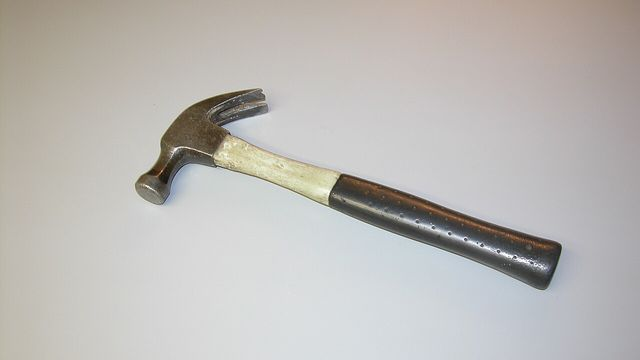
Photo Wikimedia CommonsMarteau
Corps à corps · Arme de mêlée compacte
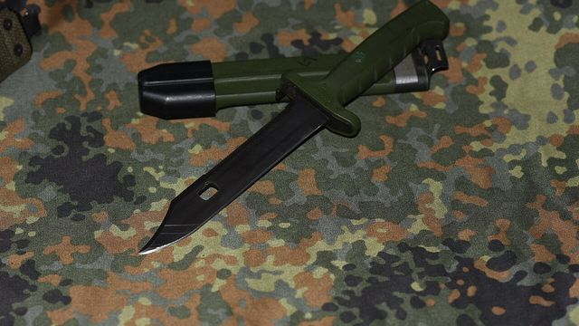
Photo Wikimedia CommonsCouteau
Corps à corps · Arme silencieuse
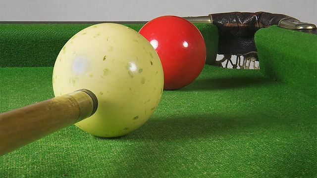
Photo Wikimedia CommonsQueue de billard
Corps à corps · Arme de mêlée improvisée
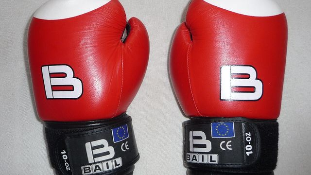
Photo Wikimedia CommonsCombat à mains nues
Corps à corps · Approche sans arme
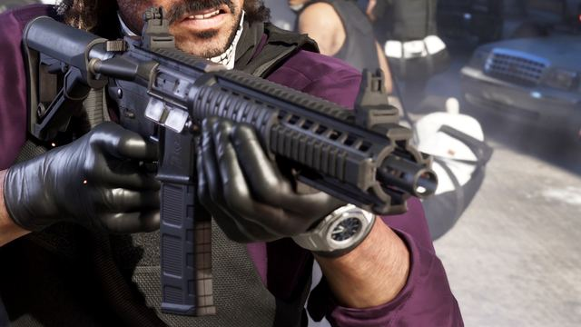
© Rockstar GamesCarabine Duke « Special Ops »
Arme
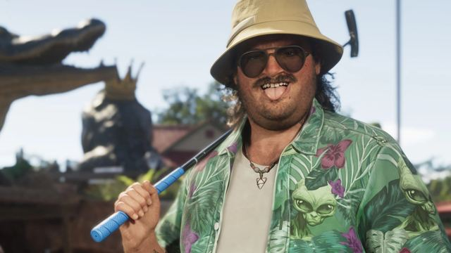
© Rockstar GamesClub de minigolf
Arme
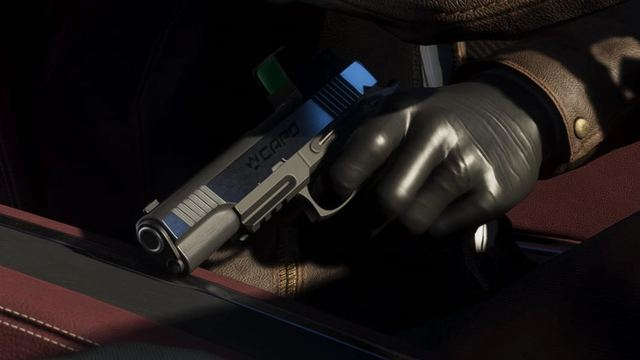
© Rockstar GamesPistolet Capo (nom non confirmé)
Arme
Noms descriptifs donnés par la presse spécialisée en attendant les noms officiels in-game (Rockstar fictionnalise habituellement ses marques d'armes réelles). Total et détail par catégorie susceptibles d'évoluer avec les prochaines bandes-annonces. Sources : GTA6-News, GTA6Guide, PC Gamer.
Images : captures officielles de GTA VI ou, à défaut, de l'arme équivalente dans GTA V (© Rockstar Games, via GTA Wiki). Les armes de mêlée et quelques armes sans visuel de jeu exploitable utilisent des photos réelles (Wikimedia Commons). Détail sur la page Crédits photos.